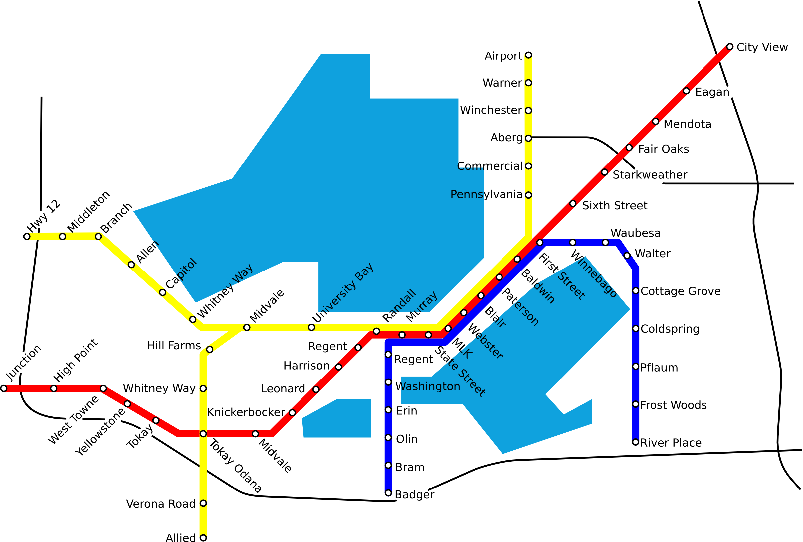

The Metro Mover
Madison needs Rapid Buses. We call our vision the M or Metro Mover. The City of Madison is too large to be served adequately only by a regular bus. Regular buses are important, but there also needs to be a way for transit to connect places outside the center of town in a reasonable period of time. Despite its lakes and isthmus, Madison actually has clearly defined corridors for good rapid transit. Below is a simple schema, the idea being that a pedestrian on East Washington Avenue should be able to easily get to Monona Drive, Park Street, University Avenue, Mineral Point Road, or State Street quickly and comfortably without a car. The alternative is deep, plentiful, and expensive roads and parking garages.

In the Madison Area, rapid buses give us the most
service for our money given our relatively small size. To be RAPID, 10 to 15 minute service
is really the minimum frequency for a bus as longer headways mean people need to plan their trips with
schedules. Most choice riders are reluctant to do that. Other features that make them RAPID include signal preemption, limited stops, transit only lanes along part of the line, and level boarding. In time, ridership will grow, potentially justifying an upgrade to rail. Although the map emphasizes Madison, especially a Madison that could experience Transit Oriented Infill, the M also has the
potential to provide green transportation to Madisons surrounding communities. The Red Line may be extended to serve Sun Prairie and Verona; the Blue Line to serve Fitchburg, McFarland, and Stoughton, and the Yellow Line to serve Middleton and Waunakee. Many American cities have or are planning rapid bus facilities. This is not a slow bus. This is high capacity transit that is competitive with
driving. Imaging is important, and while Rapid Bus vehicles could be standard diesel buses, they could also be articulated buses, electric trolleybuses, CNG powered buses, hybrid electric buses, or some combination of these. The rapid bus system could interface at stations with other transit modes, making transit a convincing choice for a significant fraction of the population. Investment in transit has the potential to provide green jobs and to reduce traffic congestion on Madisons arterials. However, mass transits role in the city is not to make it easier to drive. Instead, the goal is to provide a more convenient and economical travel option. More ideas on Rapid Transit in Madison
Here are some examples of Rapid Buses from around the country:Why Rapid Buses?
Bus Rapid Transit Comes to Seattle in 2010
An Overview of Rapid Buses in the United States